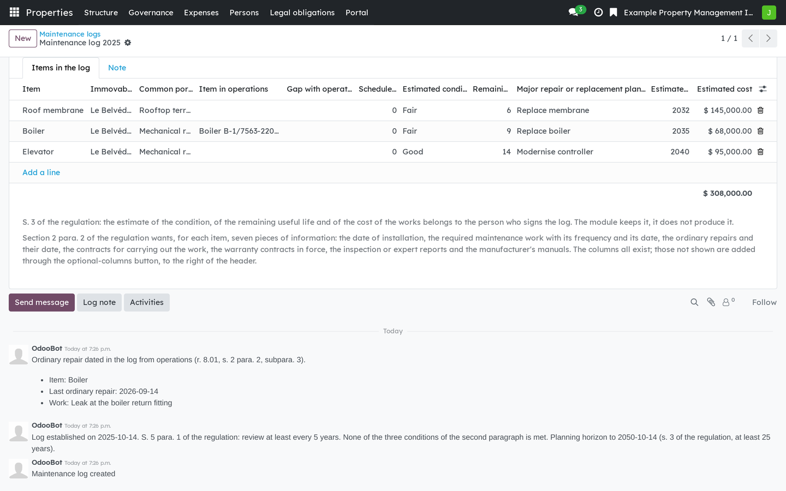
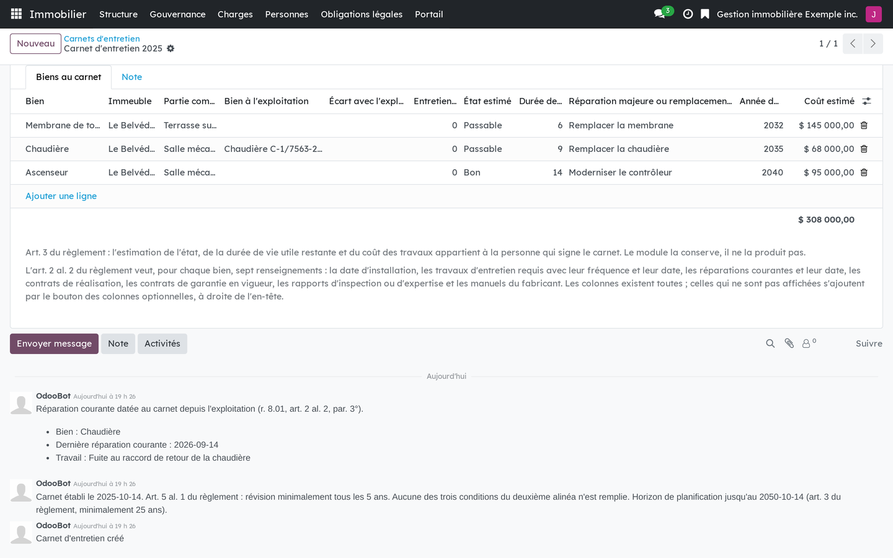

Version française plus bas.
A boiler has two records, and neither contains the other. The maintenance log that an independent professional establishes under CQLR, c. CCQ, r. 8.01 holds the regulatory reading: condition, remaining useful life, major work with its year and cost. Operations holds the working reading: model, serial number, warranty, team, failures. What costs money is the day the log still describes a boiler operations has already replaced. This bridge installs itself when both sides are present.

Items of the maintenance log that cite the equipment operations keeps.
Requires Properties: operations (bf_property_operations) and Co-ownership: maintenance log, study and certificates (bf_property_records). Installs automatically.
Business Source License 1.1. You may use this module in production for your own internal business operations, which include administering immovables that you own or that you are constituted to administer, and letting a person acting on your behalf use your instance for that purpose. Administering immovables for the account of others, or providing the module to third parties as a product or service, whether hosted, managed or resold, requires a separate written agreement with the licensor. Each version converts to LGPL-3.0-or-later on the Change Date stated in the LICENSE file, which sets out the exact terms.
Une chaudière a deux fiches, et aucune ne contient l'autre. Le carnet d'entretien qu'un professionnel indépendant établit selon le RLRQ, c. CCQ, r. 8.01 en porte la lecture réglementaire : état, vie utile restante, réparations majeures avec leur année et leur coût. L'exploitation en porte la lecture de terrain : modèle, numéro de série, garantie, équipe, pannes. Ce qui coûte cher, c'est le jour où le carnet décrit encore une chaudière que l'exploitation a déjà remplacée. Ce pont s'installe de lui-même quand les deux côtés sont présents.

Les biens du carnet d'entretien qui citent les équipements que tient l'exploitation.
Exige Immeubles : exploitation (bf_property_operations) et Copropriété : carnet, étude et attestations (bf_property_records). S'installe automatiquement.
Business Source License 1.1. Vous pouvez utiliser ce module en production pour vos propres activités internes, ce qui comprend l'administration des immeubles dont vous êtes propriétaire ou que vous êtes constitué pour administrer, et l'usage de votre instance à cette fin par une personne qui agit pour votre compte. Administrer des immeubles pour le compte d'autrui, ou fournir le module à des tiers comme produit ou service, hébergé, géré ou revendu, exige une entente écrite distincte avec le concédant. Chaque version passe sous LGPL-3.0 ou ultérieure à la date de changement inscrite au fichier LICENSE, qui fait foi.